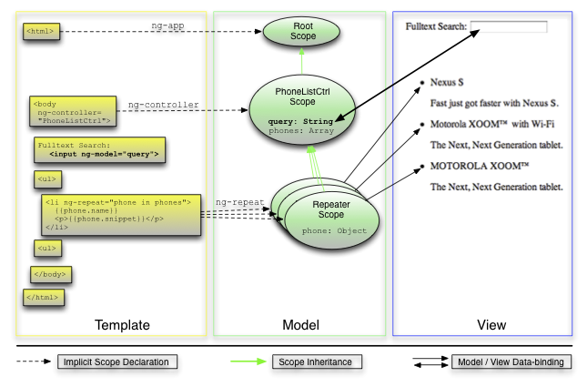
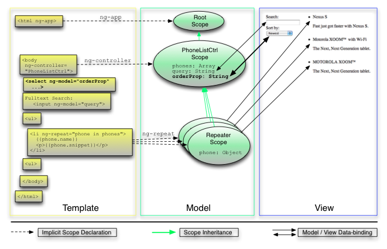
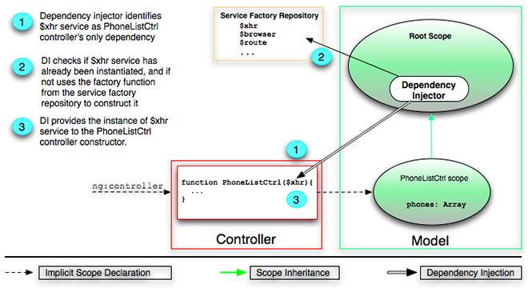

What is Single page Application?
Single Page Application
also known as single-page interface (SPI), is a web application or web site that fits on a single web page with the goal of providing a more fluid user experience akin to a desktop application
©WikipediaSingle page apps are distinguished by their ability to redraw any part of the UI without requiring a server roundtrip to retrieve HTML
©http://singlepageappbook.com/SPA issues
- Browser history
- Search engine optimization
- CI - html verification

AngularJS
What is Angular
AngularJS is a structural framework for dynamic web apps
- HTML as your template language
- extend HTML's syntax
Angular is what HTML would have been had it been designed for applications.
AngularJS features
- MVC
- Dependency Injection
- Plain JS models
- Modular architecture
- Testing bundled
- Directives (reusable components)
Angular teaches the browser new syntax through a construct we call directives.
Examples include:
- Data binding, as in {{}}.
- DOM control structures for repeating/hiding DOM fragments.
- Support for forms and form validation.
- Attaching code-behind to DOM elements.
- Grouping of HTML into reusable components.
A complete client-side solution
Angular comes with the following out-of-the-box:
- Everything you need to build a CRUD app in a cohesive set:
- data-binding
- basic templating directives
- form validation
- routing
- reusable components
- dependency injection.
- Testability story:
- unit-testing
- end-to-end testing
- mocks
- Seed application with directory layout and test scripts as a starting point.
Angular frees you from
- Registering callbacks
- Manipulating HTML DOM programmatically
- Marshaling data to and from the UI
- Writing tons of initialization code just to get started
Bootstrap
Automatic Initialization
Manual Initialization
Deferred Bootstrap
Bootstrap: Automatic Initialization
What happen during the app bootstrap:
- Loading the module associated with the ng-app.
- Injector is created.Injector creates the root scope - context for the model of our application.
- Angular "compile" the DOM starting at the ngApp root element, processing any directives and bindings found along the way.
"I'm in a hurry" example
<!doctype html>
<html ng-app="myApp">
<body>
<script src="http://code.angularjs.org/angular.js"></script>
<script src="script.js"></script>
<div>
{{ 'World' | greet }}
</div>
</body>
</html>
// declare a module
var myAppModule = angular.module('myApp', []);
// configure the module.
// in this example we will create a greeting filter
myAppModule.filter('greet', function() {
return function(name) {
return 'Hello, ' + name + '!';
};
});

Bootstrap: Manual Initialization
<!doctype html>
<html xmlns:ng="http://angularjs.org">
<body>
Hello {{'World'}}!
<script src="http://code.angularjs.org/angular.js"></script>
<script>
angular.element(document).ready(function() {
angular.module('myApp', []);
angular.bootstrap(document, ['myApp']);
});
</script>
</body>
</html>
Bootstrap: Deferred Bootstrap
- Batarang
- test runners
Dependency Injection
There are only three ways an object or a function can get a hold of its dependencies:
- The dependency can be created, typically using the new operator.
- The dependency can be looked up by referring to a global variable.
- The dependency can be passed in to where it is needed.
Dependency Injection
Dependency Annotation
Inferring Dependencies:
function MyController($scope, greeter) {
...
}
While straightforward, this method will not work with JavaScript minifiers/obfuscators as they rename the method parameter names.
Dependency Annotation
$inject Annotation
var MyController = function(renamed$scope, renamedGreeter) {
...
}
MyController['$inject'] = ['$scope', 'greeter'];
This method of annotation is useful for controller declarations since it assigns the annotation information with the function.
Dependency Annotation
Inline Annotation
someModule.factory('greeter', ['$window', function(renamed$window) {
...
}]);
Keep in mind that all of the annotation styles are equivalent and can be used anywhere in Angular where injection is supported.
Where to use DI
DI in controllers
someModule.controller('MyController', ['$scope', 'dep1', 'dep2', function($scope, dep1, dep2) {
...
$scope.aMethod = function() {
...
}
...
}]);
This avoids the creation of global functions for controllers and also protects against minification.
Where to use DI
Factory methods
Examples are directives, services, and filters.
angular.module('myModule', []).
config(['depProvider', function(depProvider){
...
}]).
factory('serviceId', ['depService', function(depService) {
...
}]).
directive('directiveName', ['depService', function(depService) {
...
}]).
filter('filterName', ['depService', function(depService) {
...
}]).
run(['depService', function(depService) {
...
}]);
Other methods for configuring angular modules
.provider(name, providerType);
.service(name, constructor);
.value(name, object);
.constant(name, object);
.animation(name, animationFactory);
.controller(name, constructor);
Module Loading & Dependencies
- Configuration blocks - get executed during the provider registrations and configuration phase.
- Run blocks - get executed after the injector is created and are used to kickstart the application.
Code example
angular.module('myModule', []).
config(function(injectables) { // provider-injector
// This is an example of config block.
// You can have as many of these as you want.
// You can only inject Providers (not instances)
// into config blocks.
}).
run(function(injectables) { // instance-injector
// This is an example of a run block.
// You can have as many of these as you want.
// You can only inject instances (not Providers)
// into run blocks
});
View and Template
The view is a projection of the model through the HTML template
<html ng-app="phonecatApp">
<head>
...
<script src="lib/angular/angular.js"></script>
<script src="js/controllers.js"></script>
</head>
<body ng-controller="PhoneListCtrl">
<ul>
<li ng-repeat="phone in phones">
{{phone.name}}
<p>{{phone.snippet}}</p>
</li>
</ul>
</body>
</html>
View and Template

Model and Controller
By providing context for our data model, the controller allows us to establish data-binding between the model and the view.
var phonecatApp = angular.module('phonecatApp', []);
phonecatApp.controller('PhoneListCtrl', function ($scope) {
$scope.phones = [
{'name': 'Nexus S',
'snippet': 'Fast just got faster with Nexus S.'},
{'name': 'Motorola XOOM™ with Wi-Fi',
'snippet': 'The Next, Next Generation tablet.'},
{'name': 'MOTOROLA XOOM™',
'snippet': 'The Next, Next Generation tablet.'}
];
});
Scope
Angular uses scopes to keep models and views separate, but in sync
Filtering
<div class="container-fluid">
<div class="row-fluid">
<div class="span2">
Search: <input ng-model="query">
</div>
<div class="span10">
<ul class="phones">
<li ng-repeat="phone in phones | filter:query">
{{phone.name}}
<p>{{phone.snippet}}</p>
</li>
</ul>
</div>
</div>
</div>
Filtering
life example
STANDARD FILTERS
- currency
- date
- filter
- json
- limitTo
- lowercase
- number
- orderBy
- uppercase
life example
Standart filters
code
{{ 10 | currency }}
{{ 1395132927875|date:"dd-MM-yyyy" }}
{{ [1,2,3,4,5,6,7,8] | limitTo: 5 }}
{{ "ABCD" | lowercase }}
{{ "abcd" | uppercase }}
Production example of filter
angular.module("wk.track3").filter('i18n', ['localize', function (localize) {
return function (input, params) {
var result = localize.getLocalizedString(input);
if(params && result && result != '') {
if(params instanceof Array) {
for (var index = 0; index < params.length; index++) {
var target = '{' + (index) + '}';
result = result.replace(target, params[index]);
}
} else {
result = result.replace('{' + (0) + '}', params);
}
}
return result;
};
}])
How to use filters in code
var result = $filter("date")(date, "MM-dd-yyyy");
var res = $filter("orderBy")(this._publications, "displayName");
Two-way Data Binding
ngModel
<input ng-model="model.data"></input>
Two-way Data Binding
Search: <input ng-model="query">
Sort by:
<select ng-model="orderProp">
<option value="name">Alphabetical</option>
<option value="age">Newest</option>
</select>
<ul class="phones">
<li ng-repeat="phone in phones | filter:query | orderBy:orderProp">
{{phone.name}}
<p>{{phone.snippet}}</p>
</li>
</ul>
Two-way Data Binding
var phonecatApp = angular.module('phonecatApp', []);
phonecatApp.controller('PhoneListCtrl', function ($scope) {
$scope.phones = [
{'name': 'Nexus S',
'snippet': 'Fast just got faster with Nexus S.',
'age': 1},
{'name': 'Motorola XOOM™ with Wi-Fi',
'snippet': 'The Next, Next Generation tablet.',
'age': 2},
{'name': 'MOTOROLA XOOM™',
'snippet': 'The Next, Next Generation tablet.',
'age': 3}
];
$scope.orderProp = 'age';
});
Two-way Data Binding
life example
XHRs & Dependency Injection
json
[
{
"age": 13,
"id": "motorola-defy-with-motoblur",
"name": "Motorola DEFY\u2122 with MOTOBLUR\u2122",
"snippet": "Are you ready for everything life throws your way?"
...
},
...
]
XHRs & Dependency Injection
controller
var phonecatApp = angular.module('phonecatApp', []);
phonecatApp.controller('PhoneListCtrl', function ($scope, $http) {
$http.get('phones/phones.json').success(function(data) {
$scope.phones = data;
});
$scope.orderProp = 'age';
});
XHRs & Dependency Injection
life example
Routing & Multiple Views
var appModule = angular.module('myApp', ['ngRoute',
'ngResource', 'app.controllers']);
appModule.config(['$routeProvider',
function($routeProvider) {
$routeProvider.
when('/details/:Id', {
templateUrl: 'repo-detail.html',
controller: 'RepoCtrl'
}).
when('/home', {
templateUrl: 'home.html',
controller: 'mainController'
}).
otherwise({
redirectTo: '/home'
});
}]);
Routing & Multiple Views
life exampleAngular Life Cycle
to mention:- angular event handlers
- binding
- watcher
Directive
What are Directives?
At a high level, directives are markers on a DOM element that tell AngularJS's HTML compiler to attach a specified behavior to that DOM element or even transform the DOM element and its children.
Matching Directives
In the following example, we say that the <input> element matches the ngModel directive
<input ng-model="foo">
<my-dir></my-dir>
<span my-dir="exp"></span>
<!-- directive: my-dir exp -->
<span class="my-dir: exp;"></span>
Text and attribute bindings
During the compilation process the compiler matches text and attributes using the $interpolate service to see if they contain embedded expressions.
These expressions are registered as watches and will update as part of normal digest cycle. An example of interpolation is shown below:
<a ng-href="img/{{username}}.jpg">Hello {{username}}!</a>
ngAttr attribute bindings
<svg>
<circle cx="{{cx}}"></circle>
</svg>
<svg>
<circle ng-attr-cx="{{cx}}"></circle>
</svg>
Creating Directives
To register a directive, you use the module.directive API.
Template-expanding directive
angular.module('docsTemplateUrlDirective', [])
.controller('Controller', ['$scope', function($scope) {
$scope.customer = {
name: 'Naomi',
address: '1600 Amphitheatre'
};
}])
.directive('myCustomer', function() {
return {
templateUrl: 'my-customer.html'
};
});
Comprehensive Directive API
var myModule = angular.module(...);
myModule.directive('directiveName', function factory(injectables) {
return {
priority: 0,
template: '', // or // function(tElement, tAttrs) { ... }, // or //templateUrl: 'directive.html'
replace: false,
transclude: false,
restrict: 'A',
scope: false,
controller: function($scope, $element, $attrs, $transclude, otherInjectables) { ... },
controllerAs: 'stringAlias',
require: 'siblingDirectiveName', // or // ['^parentDirectiveName', '?optionalDirectiveName', '?^optionalParent'],
compile: function compile(tElement, tAttrs, transclude) {
return {
pre: function preLink(scope, iElement, iAttrs, controller) { ... },
post: function postLink(scope, iElement, iAttrs, controller) { ... }
}
// or
// return function postLink( ... ) { ... }
},
// or
// link: {
// pre: function preLink(scope, iElement, iAttrs, controller) { ... },
// post: function postLink(scope, iElement, iAttrs, controller) { ... }
// }
// or
// link: function postLink( ... ) { ... }
};
});
Directive Definition Object
priority
is used to sort the directives before their compile functions get called.
Pre-link functions are also run in priority order, but post-link functions are run in reverse order.
Directive Definition Object
terminal
If set to true then the current priority will be the last set of directives which will execute
Directive Definition Object
Replace
Specify where the template should be inserted. Defaults to false.
- true - the template will replace the current element.
- false - the template will replace the contents of the current element.
Directive Definition Object
scope
If set to true, then a new scope will be created for this directive.
If set to {} (object hash), then a new "isolate" scope is created.
The 'isolate' scope differs from normal scope in that it does not prototypically inherit from the parent scope.
Directive Definition Object
'Isolated' scope
The 'isolate' scope differs from normal scope in that it does not prototypically inherit from the parent scope.
This is useful when creating reusable components, which should not accidentally read or modify data in the parent scope.
Very important pointDirective Definition Object
Controller
Very important pointDirective Definition Object
Transclude
Very important pointLife example
Directive Definition Object
Compile vs Link
Very important pointLife example
Attributes
AttributesPractice
to implement custom filter which converts came-case to dash-separeted strings.
Practice
to implement reusable tab control.
Testing

ngMock. Testing controllers. Testing services.
Jasmine
- BDD-style testing framework
- Syntax based on rspec
- Bundled mocking functionality
- module() - load existing module by name or create custom module
- inject() - inject and arbitary
- $httpBackend - mock the backend of $http in order to test AJAX requests
inject() and module()
beforeEach(module('myModule'));
it(inject(function(_service_){
service = _service_;
}));
beforeEach(function() {
module('myModule');
});
it(function() {
inject(function(_service_) {
service = _service_;
});
});
$controller
$controller('PhoneListCtrl', {$scope:scope})
The approach to test a controller
- Load the module
- Create a new scope with $rootScope.new()
- Create the controller with $controller
- Inject your scope into the $controller call